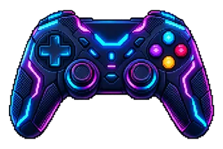
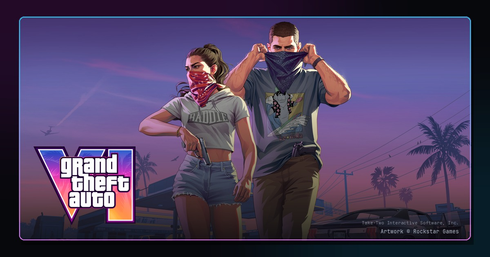
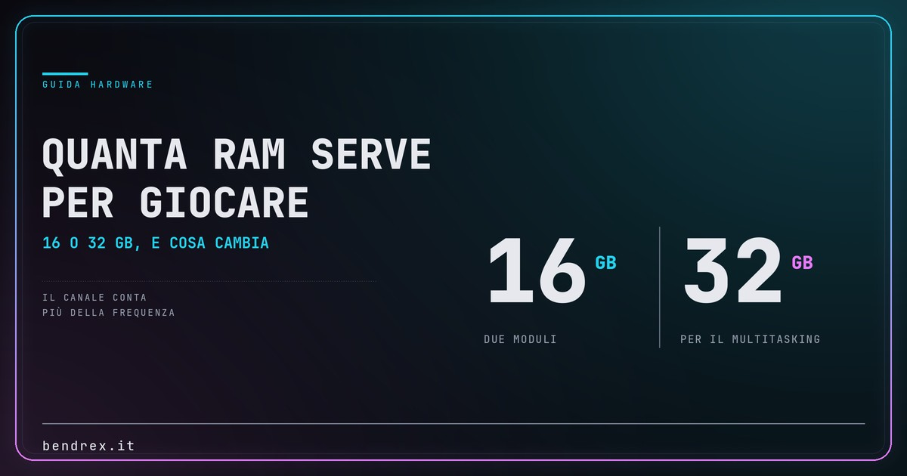
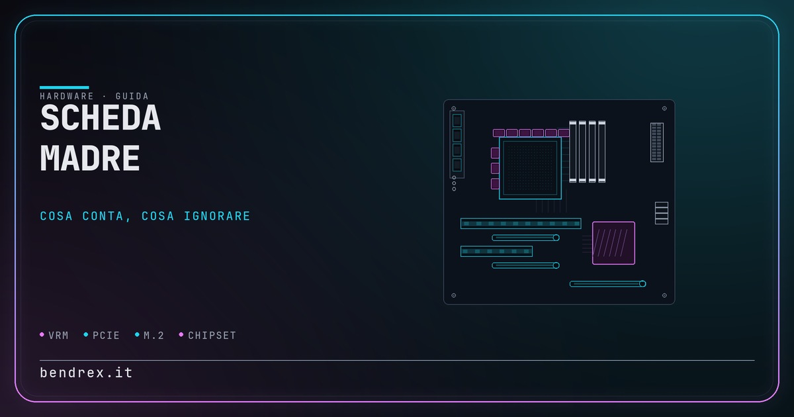
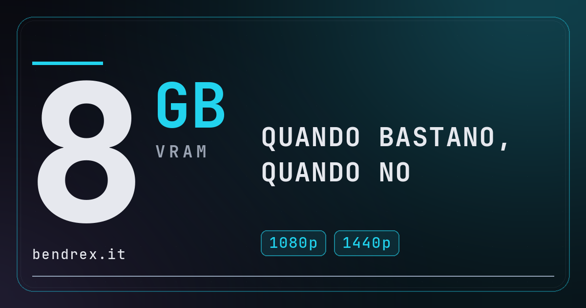
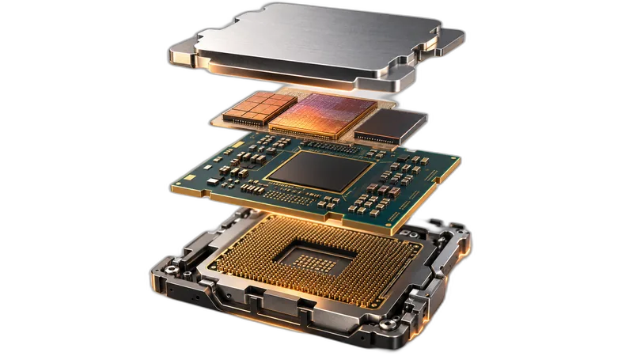
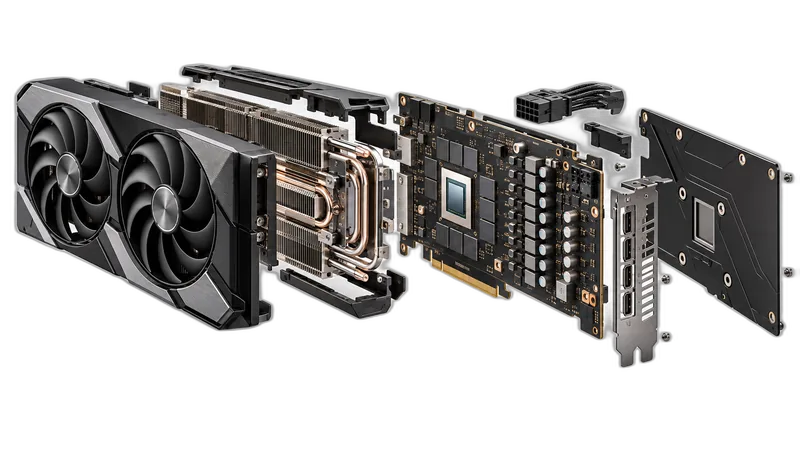
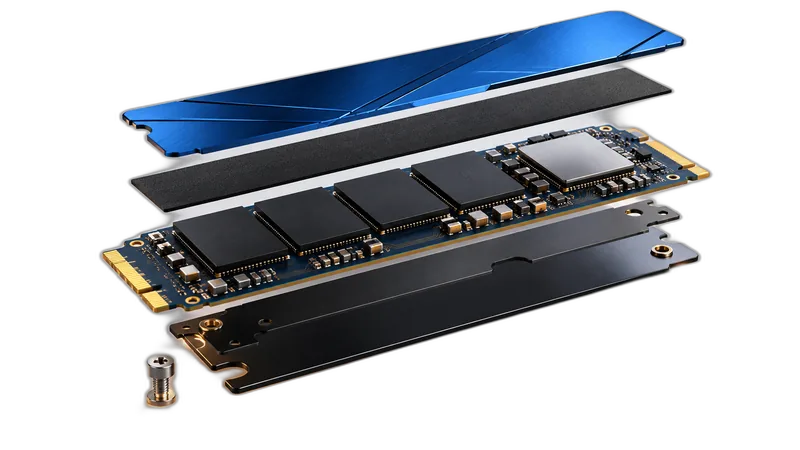

Hardware
Build PC
Configurazioni Economy, Media e Ultra: cosa costa ogni componente e perché l'abbiamo scelto.
Vedi le build →Build con prezzi rilevati e link ai negozi, news con fonte e data, calendario eventi aggiornato al 23/11/2026. Tutto in un solo posto.
Calendario13 eventi in calendario · novembre 2026 – novembre 2027

Tre aree, un solo ecosistema.
Hardware
Configurazioni Economy, Media e Ultra: cosa costa ogni componente e perché l'abbiamo scelto.
Vedi le build →Community
News, guide e discussioni, con la data di ogni articolo.
Leggi e partecipa →Calendario
Fiere, showcase e premi con date da fonti ufficiali.
Apri il calendario →Le notizie che contano, ognuna con la sua fonte e la data.

News
Un giocatore racconta di aver ricevuto 30 giorni di sospensione PSN per una foto scattata nel resort nudista del gioco.
Leggi →News
Esce il 18 febbraio 2027 su PC, PS5 e Xbox Series X|S; Switch 2 annunciata senza data.
Leggi →Cup of Game
Castlevania: Belmont's Curse è il ritorno di Konami firmato Evil Empire. Com'è, requisiti PC e prezzo, e a chi può piacere.
Leggi →Cup of Game
Nocturnal 2, il metroidvania di Sunnyside Games: com'è, requisiti minimi, prezzo su Steam e a chi può piacere.
Leggi →News
Il download anticipato è già partito: quanto spazio serve, quando si può scaricare e cosa fare se il precaricamento si blocca.
Leggi →Blog
Dreadmoor è un gioco di pesca horror in accesso anticipato su PC: com'è, cosa c'è già e cosa arriverà con la 1.0, e a chi può piacere.
Leggi →News
Missioni, doppia pistola e mod.io nell'update ufficiale; il multiplayer arriva da NightCoop e ChoomLink, due mod non supportate da CDPR.
Leggi →News
Requisiti PC non ancora annunciati: una base 1440p chiaramente speculativa.
Leggi →News
La nuova avventura cooperativa di Total Mayhem Games esce il 20 ottobre.
Leggi →Un AAA, un AA e un indie: tre modi di spendere tempo e soldi. Prezzi del 17 novembre 2026.
AAA
Il ritorno della saga, ma solo su console.
79,99 € listino PS Store
Come scaricarlo →AA
La frusta torna in 2D, con lo studio delle espansioni di Dead Cells.
circa 30 € su Steam
Leggi l'analisi →Indie
Un metroidvania indie sotto i 10 €.
circa 8–9 € su Steam
Leggi l'analisi →Guide e analisi sui componenti delle nostre build.

Hardware
Due moduli contano più di un modulo unico: 16 GB bastano, 32 GB danno margine e non frame.
Leggi →
Hardware
VRM, PCIe, M.2 e chipset: cosa guardare davvero e cosa si può ignorare quando scegli la scheda madre.
Leggi →
Hardware
Requisiti ufficiali e test 8 contro 16 GB: cosa cambia a 1080p e a 1440p.
Leggi →
Hardware
La 3D V-Cache di seconda generazione e il ruolo della CPU nella build Ultra.
Leggi →
Hardware
12 GB di GDDR7 e DLSS 4 per il punto di equilibrio della build Media.
Leggi →
Hardware
Il Kingston NV3 da 1 TB taglia le attese anche a budget nella build Economy.
Leggi →Tre fasce, un obiettivo: spendere il giusto per giocare come vuoi.
Entry · 1080p
Gaming fluido a 1080p su esports e AAA a dettagli medi.
1.525 €
Ryzen 5 7600 · RTX 5060 · 16 GB · NV3 1 TB
Vedi la build →Mainstream · 1440p
Equilibrio ideale per 1440p a dettagli alti e produttività.
2.490 €
Ryzen 7 9700X · RTX 5070 · 32 GB · 990 PRO 2 TB
Vedi la build →Enthusiast · 4K
Massime prestazioni per 4K, ray tracing e streaming.
3.400 €
Ryzen 7 9800X3D · RTX 5070 Ti · 32 GB · T710 2 TB
Vedi la build →Le date da segnare in agenda.
27–29 novembre 2026
Milan Games Week & Cartoomics 2026
Fiera Milano Rho
10 dicembre 2026 · streaming mondiale
The Game Awards 2026
Peacock Theater, Los Angeles
1–4 marzo 2027
GDC Festival of Gaming 2027
Moscone Center, San Francisco
Parti da una build pronta o segui il calendario eventi.